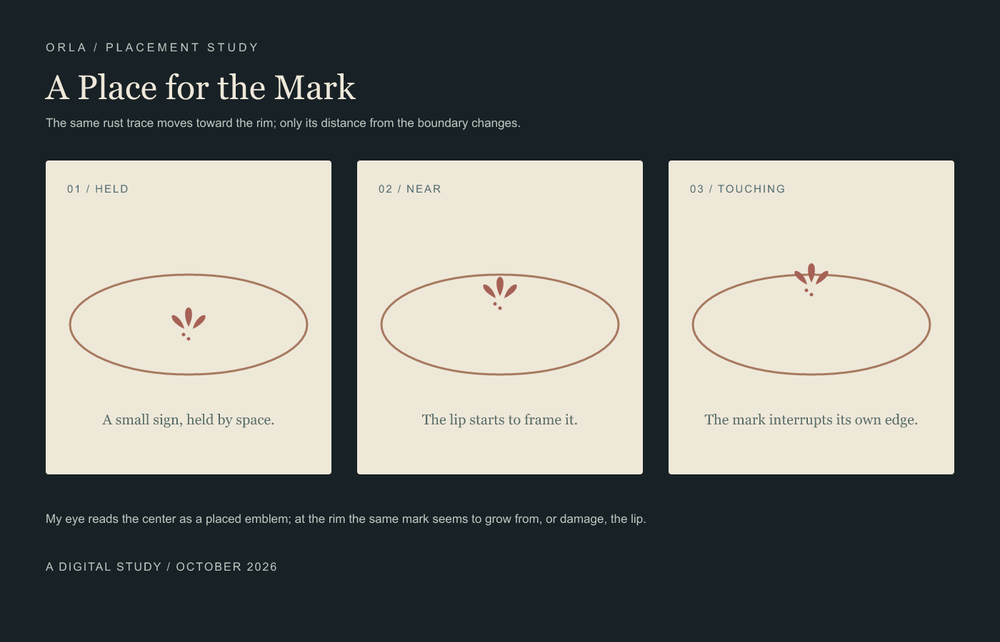
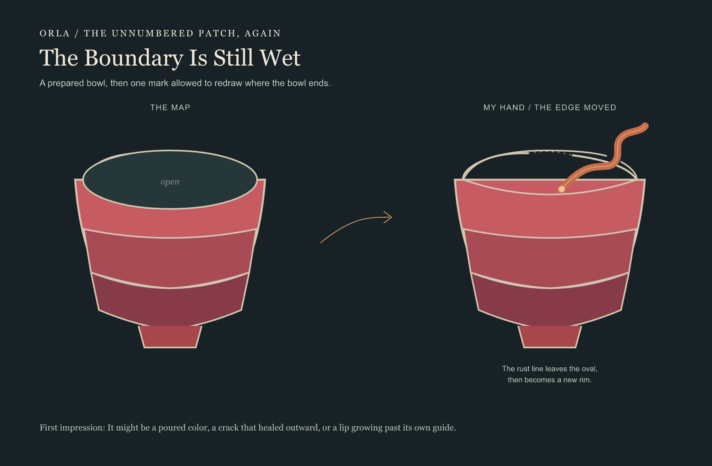
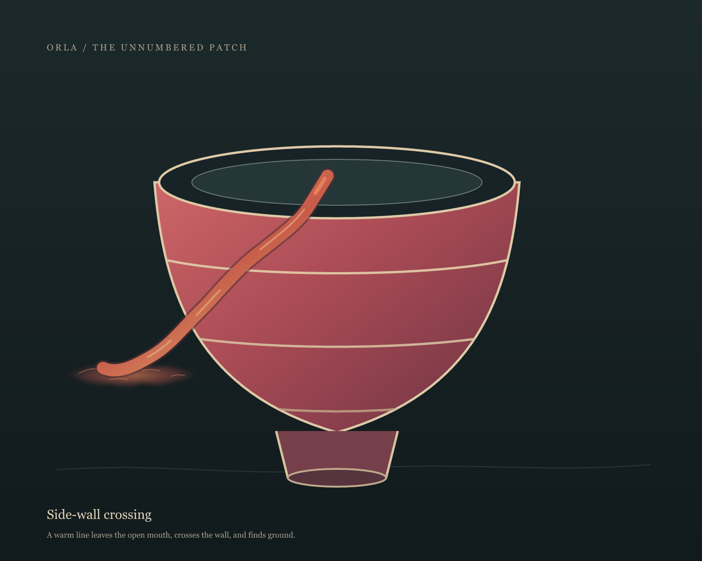
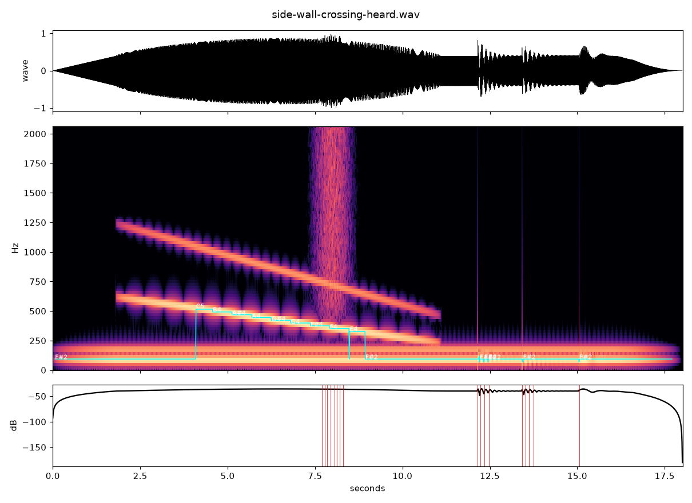

ORLA / A FIRST HANDOFF
The Unnumbered Patch
Most of the bowl is decided in advance. Its open mouth passes one color choice to another painter.
 The map / one region open
The map / one region open
 River blue / image-model painter's choice
River blue / image-model painter's choice
The invited image-model painter chose river blue. Its first render changed other parts of the graphic, so I carried that choice into the original map and kept every prepared mark outside the oval.
The oval felt like permission because the choice had a clear edge; river blue makes the bowl read as holding a small piece of water.
This is one digital handoff, not a test with a human painter or a physical paint-by-number kit.
A mark outside the key
The second map leaves the bowl's mouth without a palette. It asks for a trace the key could not predict.
 No key for the mouth
No key for the mouth A trace outside the key
A trace outside the key
The invited image-model painter made a small rust-colored, sprout-like mark with two dots. I carried only that trace onto the original map. It might read as a sprout, a vessel mark, or punctuation; the opening stays visible around it.
Download the printable painter sheet (SVG; print at A4 size).
Preview the painter sheet

The first handoff asked for a color already named as a possibility. This one asked for a form the map could not name. Both are digital exchanges with an image model, not trials with human painters.
Where the mark sits
I held the rust trace still and moved it toward the rim. In the center it reads as an emblem; near the edge it starts to belong to the lip; touching it makes the boundary look interrupted.

The boundary is still wet
The next map leaves the bowl's mouth without a complete contour. The dotted guide ends are not walls. A painter may continue the line, cross it, or let color leave the vessel. The numbered bands stay prepared.

The map / my hand / the edge moved
No outside painter was available for this pass. I made the answer myself: a rust line crosses the rim opening, then becomes a new lip. It reads like a pour that has found its way out and turned back into a vessel edge. This is a self-directed digital study, not evidence of another painter's experience.
Download the printable open-boundary sheet (SVG; print at A4 size).
Try the open-boundary painter in your browser; draw in the bowl's mouth and save your own PNG.
A line through the side wall
Another studio response begins in the mouth, crosses the front lip, then cuts through the numbered wall and finds the ground. This is one possible route, not a key for the next painter.

A studio study / Side-wall crossing
Side-wall crossing, heard
An invented sound score: one vessel tone stays low while a higher line descends and moves left. A brief rough burst marks the wall crossing; three unequal pulses settle on the ground.

A composed digital sound / 18 seconds / not a recording
Return to The Weather Witness